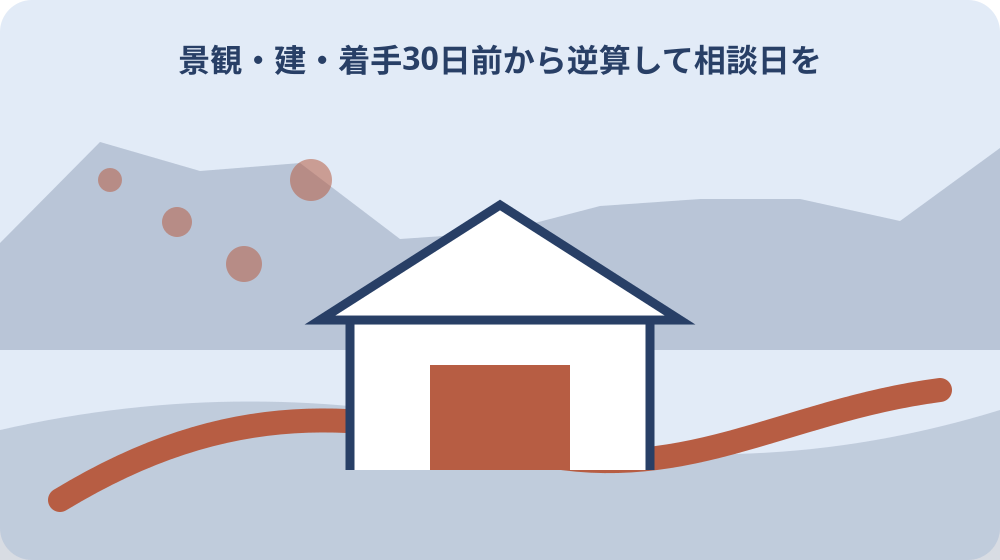
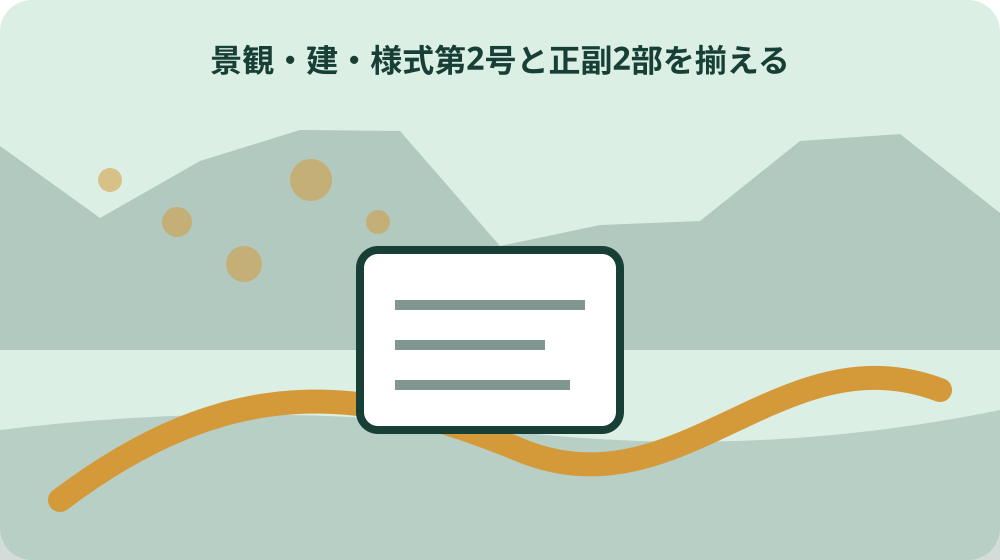

先に結論を確認する
この記事の答え：個人住宅でも高さ10メートル超など届出対象規模なら必要です。規模と行為種別で判定します。
森町で最初に照合する条件：他法令の申請がある工事とない工事で30日前の起算点が異なるため、最初に確認申請・開発許可の有無を記録する。
工事の行為種別を最初に固定する
森町の景観届出では、建築物の新築・増築・改築・移転・外観変更、工作物の建設、開発行為など、何を行うかで確認する規模と添付図書が変わる。工事名だけでなく、景観届出上の行為種別を決める。
外壁塗装は外観の修繕や色彩変更、造成は開発行為に当たる可能性がある。建築物と造成を一体で計画する場合、一つの届出にできる場合と時期を分ける場合があるため、計画の確定度を町へ伝える。
行為種別表には対象物、工事内容、対象部分、着手予定日、他法令申請の有無を記載する。複数行為がある案件は一つに丸めず、各行為の届出要否を照合する。
太陽光発電設備、屋根・外壁の色彩変更、造成を伴う建築などは、一案件に複数の行為欄が関係し得る。様式第2号の選択肢と計画図を照合し、判断に迷う組合せは着手日を決める前に都市計画係へ示す。既存建物そのものは届出不要でも、対象規模の外観変更を新たに行う場合は届出が必要になり得る。既存か新設か、今回変更する範囲はどこかを色分けした図面で説明する。仮設物は一定期間後に撤去される現場事務所などが例示されるが、名称だけで仮設扱いにしない。設置期間、用途、建築基準法上の許可の有無を示して適用除外を確認する。
確認申請・開発許可の有無で期限を分ける
建築基準法や都市計画法の申請等を要する行為は、その申請等の30日前までに景観届出を提出する。申請等を要しない外観変更などは、行為着手の30日前までが提出期限になる。
建築確認申請日と工事着手日は同じ日付ではない。どちらを起点にする案件かを設計者と確認し、確認申請の提出直前に景観届出の存在へ気付く進め方を避ける。
工程表には事前相談、景観図書確定、景観届出、適合通知、確認申請等、工事着手を別の行で並べる。開発許可と建築確認の両方がある場合は、それぞれの予定日を町へ示す。
確認申請等の30日前という期限と、景観届出後30日間の着手制限は別の規定として管理する。適合通知を受けた時点で着手できるかを含め、案件ごとの日程は森町の窓口へ確認する。工程表では『景観届出期限』『確認申請予定日』『景観法上の着手可能日』『実着手日』を別列にする。設計者と施工者が異なる場合も同じ日付表を共有する。確認申請日が変更されたら、景観届出期限も再計算する。古い工程表を残し、変更理由と町へ再確認した内容を施工会議で共有する。
高さ・延べ面積・見付面積を別々に測る
個人住宅でも高さ10メートルを超えるなど届出対象規模なら対象になる。高さ10メートル超または延べ面積1,000平方メートル以上となる建築物では、増改築部分が10平方メートルを超える場合に届出が必要と案内されている。
外観の修繕や模様替えは、変更部分の見付面積が、その部分を含む面全体の見付面積の2分の1以下なら届出不要とされる。延べ面積と見付面積は別の数値なので、床面積だけで外観変更を判断しない。
判定表には地盤面からの高さ、全体の延べ面積、増改築部分の面積、各面の見付面積、変更部分の見付面積を分けて記す。根拠にした立面図と図面版も併記する。
工作物を建築物などの構造物上へ設置する場合、Q&Aは届出対象となる高さを地盤面から10メートル超で見ると案内する。単体の工作物高さだけを測り、設置位置の高さを落とさないよう断面図で確認する。見付面積は建築物等の鉛直投影面積であるため、塗装面積や材料発注面積と一致するとは限らない。各面の算定図を残して2分の1判定を再現できるようにする。増改築部分10平方メートル以下という除外と、外観変更部分2分の1以下という除外も別判定である。工事項目ごとに使った除外条項を記録する。

開発面積1,000平方メートルの可能性を確認する
開発行為は主に建築物や特定工作物のために行う土地の区画形質の変更を指す。都市計画法上の開発許可が不要でも、1,000平方メートル以上なら森町の景観届出が必要となる可能性がある。
造成範囲は建物の敷地面積だけでなく、切土・盛土や区画変更を行う範囲で確認する。工区を分ける計画でも全体計画との関係を示し、各工区だけが1,000平方メートル未満という理由で除外しない。
面積図には行為区域、求積根拠、造成着手日を記載する。建築詳細が未確定なら、開発行為を先に届け、建築行為を後で別に届ける方法を採るか町へ相談する。
開発行為と届出対象建築物の詳細が同時に決まっていれば、一つの届出で済ませられる場合がある。別届にするか一体届にするかで提出時期が変わるため、造成と建築の設計進度を相談時に説明する。土地利用計画平面図は開発許可や土地利用承認申請へ添付する全体計画平面図と同じものを指すとQ&Aが説明する。求積図や公図写しを追加で求められる場合もある。
着手30日前から逆算して相談日を置く
景観法上の届出後は原則として30日間、対象行為に着手できない。森町は届出後の変更調整が難しくなることを見込み、構想・計画の早い段階で事前相談するよう案内している。
建築物では本体の基礎コンクリート工事、外観変更では建物本体工事、開発行為では切土・盛土の造成工事が着手の目安になる。根切りなど法令上着手に含まれない工事があっても、自己判断で先行しない。
相談日は30日前の期限そのものではなく、規模判定と図面修正ができる前へ置く。相談時には配置図、立面図、面積表、色彩案、撮影予定地点を示し、追加図書を確認する。
根切り・山留めなど景観法施行令上の着手に含まれない工事がある一方、建造物本体の基礎コンクリート工事は着手と説明される。工程名称だけで先行可否を決めず、具体作業を町へ伝える。外観変更では足場設置日ではなく建物本体工事の開始が着手の説明に関係する。施工会社の工程名と条例上の着手が一致するか、作業内容で確認する。
様式第2号と正副2部を揃える
当初の行為届出は様式第2号を使い、行為に応じた添付図書を付けて正副各1部、合計2部を建設課へ提出する。変更届の様式第3号、完了届の様式第4号と取り違えない。
届出内容は森町景観計画の景観形成基準へ適合するか審査され、書類に不備がなく基準に適合した場合は適合通知が交付される。提出しただけで適合確認が終わったとは扱わない。
正本と副本は図面番号、作成日、色彩、写真を一致させる。提出控えには受領日と図面版を記録し、適合通知を受け取った版を施工者へ共有する。
添付図書は行為内容によって異なり、配置図、立面図、写真、仕上げ表などを一律に省略できない。森町公式の添付図書一覧を現行版で確認し、各図書の縮尺・着色・記載事項をチェックする。外部仕上げ表の内容を立面図内へ全て記載する場合は添付不要とする案内もあるため、二重提出か省略かを図面構成に合わせて町へ確認する。
近景写真に撮影位置と方向を付ける
森町のQ&Aは、敷地の状況を確認するための近景写真を周辺道路などから撮影するよう案内している。対象物だけを切り抜かず、敷地境界や接する道路との関係が分かる構図を選ぶ。
近景写真は撮影地点を配置図に番号で示し、撮影方向、撮影日、対象面を対応させる。東西南北の表記と写真ファイル名をそろえ、どの立面の確認に使うか分かるようにする。
着手後に同じ地点へ立てなくなる場合は、安全に撮影できる代替位置も着手前に決める。私有地へ無断で入らず、公道から撮影できない事情は相談時に町へ伝える。
近景は各面の外観だけでなく、敷地内の配置が読み取れる必要がある。撮影地点Aから南面、地点Bから東面というように写真一覧を作り、立面図の面名称と一致させる。写真撮影後に設計対象範囲が広がった場合は、旧写真を流用せず追加範囲が分かる写真を撮る。画像には撮影日を保持し、図面上の地点番号とファイル名を照合する。
遠景写真で周辺との関係を残す
遠景写真は周辺の状況を確認するため、対象地から少し離れた、現場がよく見える場所から撮影する。建物単体の色だけでなく、町並み、稜線、周辺建物との高さや配置の関係を示す。
近景と遠景は同じ写真を名称だけ変えて使わない。遠景の撮影地点、対象までの方向、画面内の目印を配置図へ記し、工事完了時にも同じ関係を確認できるようにする。
樹木、仮囲い、駐車車両で対象が隠れる場合は、複数方向から補足する。季節や工事進行で見え方が変わる要素があれば、撮影条件を写真台帳へ記載する。
遠景の撮影場所として町のQ&Aは現場がよく見える駐車場や空地等を例示するが、自由に立ち入れるという意味ではない。利用許可と安全を確かめ、公道上では交通を妨げない位置を選ぶ。周辺の基調を読むため、対象だけを望遠で切り取らず、隣接建物の壁面位置、階数、屋根勾配、背後の稜線が確認できる画角も用意する。
仕上げ材・マンセル値・色の割合を台帳化する
外部仕上げ表には屋根・壁などの部分ごとに仕上げ方法、色のマンセル値、面積を記載する。アクセントカラーを使う場合は、その色が占める割合も記載する。
立面図は全体像が分かるよう着色し、仕上げ表のマンセル値と対応させる。印刷色がマンセル値と厳密に同色でなくても、審査は記載値を使うため、図面・仕上げ表・材料指定の番号を一致させる。
色彩台帳には部位、材料名、メーカー色、近似マンセル値、面積、割合、図面番号を並べる。設計変更や製品廃番が生じたら、変更前後の数値を比較して変更届の要否を確認する。
マンセル値で直接表せない材料は近似値を記載するようQ&Aが案内している。木材・金属など素材感が外観へ影響する場合は、近似値だけでなく材料写真や仕上げ見本の扱いを町へ確認する。アクセント色の割合は、どの面積を分母にしたかを計算表へ残す。立面ごとの割合と建物全体の割合を混同せず、町が求める算定単位へ合わせる。

変更届を当初版と差分管理する
景観形成基準に関係する内容を変更するときは、様式第3号へ変更部分の添付図書を付け、あらかじめ届け出る。当初届にまだ着手していない場合と、既に着手した場合で30日間の制限が及ぶ範囲が異なる。
色彩、配置、高さ、外観、造成範囲の変更は、施工指示を出す前に届出要否を確認する。軽微に見える変更でも、当初図書のどの基準に関わるかを設計者と町へ示す。
差分表には変更理由、対象図面、旧値、新値、変更届提出日、変更部分の着手可能日を記載する。旧図面を削除せず、施工現場で有効な版を明示する。
当初届へ未着手なら変更届から30日間、既に着手済みなら変更部分の工事について変更届から30日間という町Q&Aの説明を工程表へ反映する。変更部分を先に施工してから追認を求めない。材料廃番など施工直前の変更でも、発注期限を理由に届出を省略しない。代替材の色、面積、該当立面を旧仕様と比較して、変更届の対象範囲を確認する。
大石の視点：着手前と完了後を同じ構図で比べる
公的事実として、当初届には敷地の近景と周辺の遠景が求められ、完了届には行為の完了を示す写真を添付する。森町の資料は、着手前と完了後を必ず同一構図にするとは定めていない。
ここからは私見である。大石の視点では、着手前と完了後を可能な範囲で同じ撮影地点・方向にそろえると、屋根、壁、アクセント色、建物高さ、造成後の法面を届出版と照合しやすい。
私なら撮影地点番号、方向、撮影日、天候を元画像と一緒に残す。同じ地点へ安全に立てない場合は代替地点と理由を記し、色補正で設計色へ近付けず、町が確認できる記録を優先する。
この同一構図の提案は森町が明示した義務ではない。写真台帳には『町が求める近景・遠景』『町が求める完了写真』『大石が勧める比較用写真』を分け、私見を公式要件として読ませない。比較用写真を追加しても、町が求める完了箇所が写っていなければ代替にならない。提出写真の選定は公式添付要件を先に満たし、比較記録はその補助にする。
完了日から14日以内に様式第4号を提出する
届け出た行為が完了したら、完了日から14日以内に様式第4号と完了写真を提出する。工事代金の精算日や建物の使用開始日ではなく、届出対象行為の完了日を特定する。
森町のQ&Aは基本的に完了検査を行わないとする一方、必要に応じて現地を確認すると案内している。検査が通常ないことを理由に、完了届や写真を省略しない。
案件台帳の最後に行為完了日、写真撮影日、完了届提出日を別々に記載する。当初届、適合通知、変更届、完了届を同じ案件番号でつなぎ、どの図面版で完了したかを確定する。
完了日の定義が工程上明確でない場合は、設計者・施工者・届出者で対象行為の完了日を確認する。外構や植栽が届出内容に含まれるなら、建物本体だけの完成日を起点にしない。完了から14日を数える表には完了日、14日目、提出予定日を置く。変更届が複数ある案件では、最終承認版と完了写真の対象が一致するか提出前に読み合わせる。写真一覧には当初届の写真番号、完了写真番号、対応する立面・配置図を記載する。
町から追加写真を求められた場合は、撮り直し日と提出日を追記し、最初の提出記録も残す。完了届提出後に外観を再変更する計画が生じたら、新しい行為として届出要否を確認する。完了届の写しと写真一式は、適合通知・変更届と同じ図面版番号で保管し、施工会社だけが持つ状態にしない。届出者側にも受理日と提出内容が分かる一式を残し、将来の改修時に当初の届出範囲を確認できるようにする。